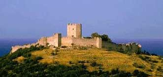

Το κάστρο του Πλαταμώνα
 Κτισμένο σε θέση που να ελέγχει το δρόμο Μακεδονίας - Θεσσαλίας - Νότιας Ελλάδας, από τα χρόνια της μεσοβυζαντινής περιόδου (10ος μ.Χ. αιώνας), καταλήφθηκε το 1218 από τον δεσπότη της Ηπείρου Θεόδωρο ¶γγελο και το 1259 (μάχη της Πελαγονίας) από τον αυτοκράτορα της Νίκαιας Μιχαήλ Η΄ Παλαιολόγο. Με το όνομα Πολίχνη συναντάμε τον Πλαταμώνα τον 14ο αι. ως έδρα Επισκόπου. Γύρω στο 1385 το κάστρο καταλήφθηκε από Τούρκους, οι οποίοι το χρησιμοποιούσαν, γι’ αυτό και το διατήρησαν σε καλή κατάσταση. Στον 2ο Παγκόσμιο Πόλεμο (1941) βομβαρδίζεται από τα γερμανικά στρατεύματα. Ίχνη ελληνιστικού τείχους (4ος αιώνας) επιβεβαιώνουν τις απόψεις ότι στη θέση αυτή υπήρχε η αρχαία πόλη Ηράκλειο, "πρώτη πόλις Μακεδονίας..." μετά τα Τέμπη. | ||